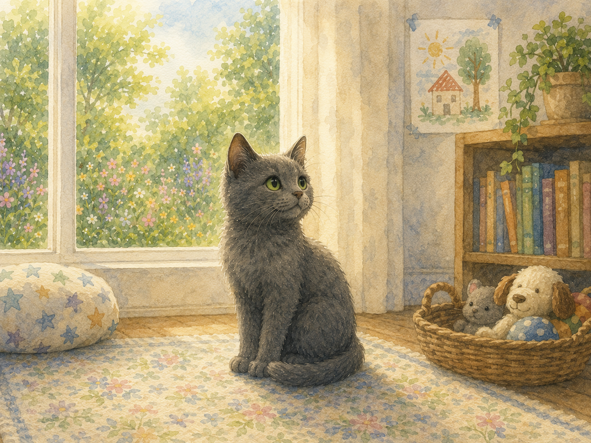
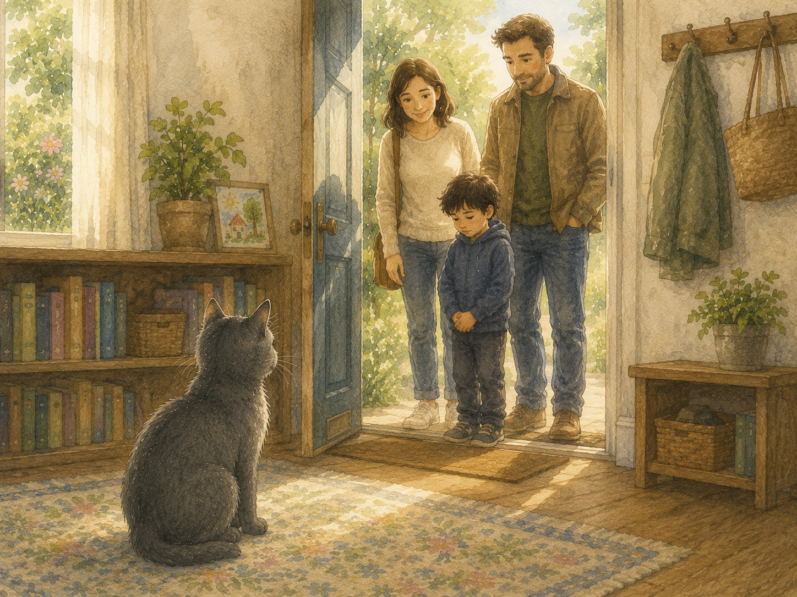
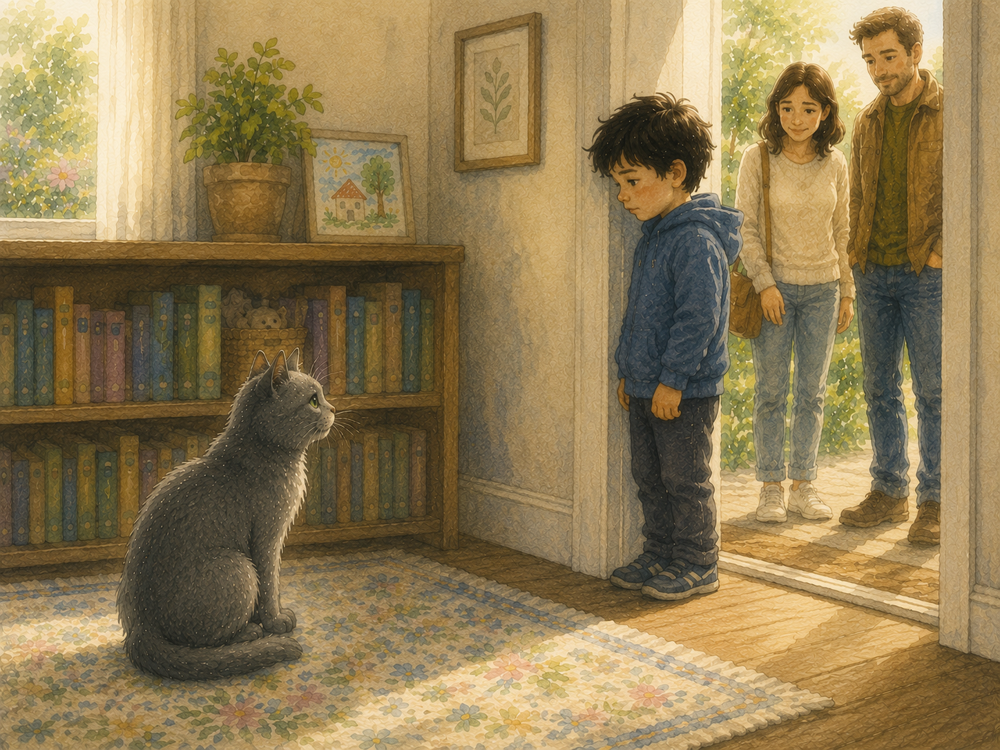
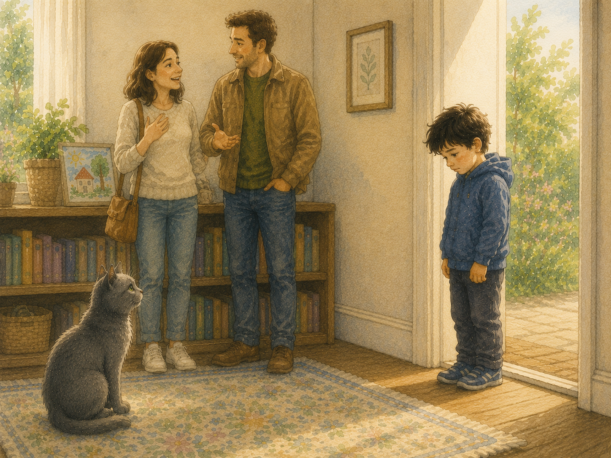
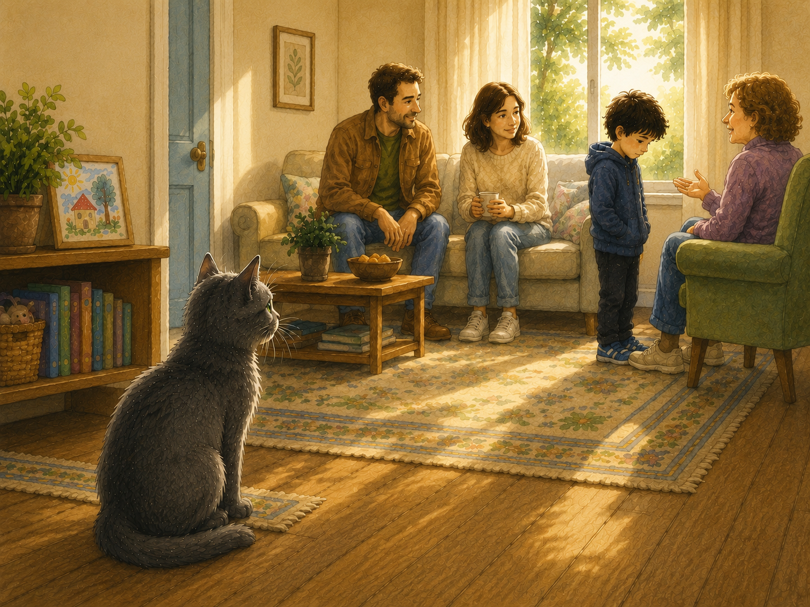
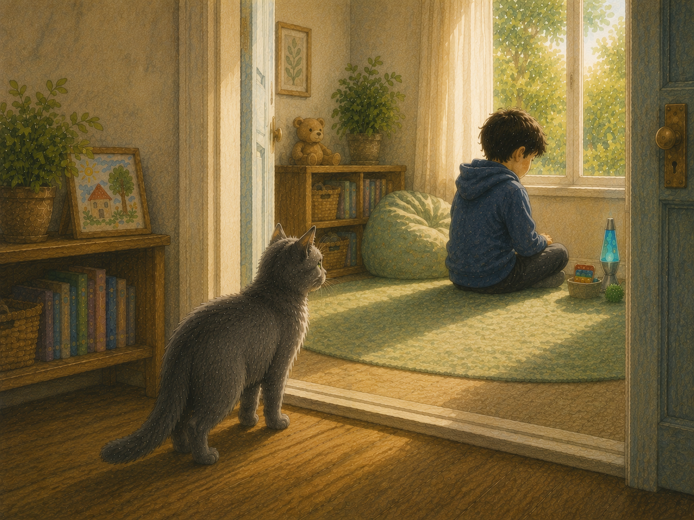
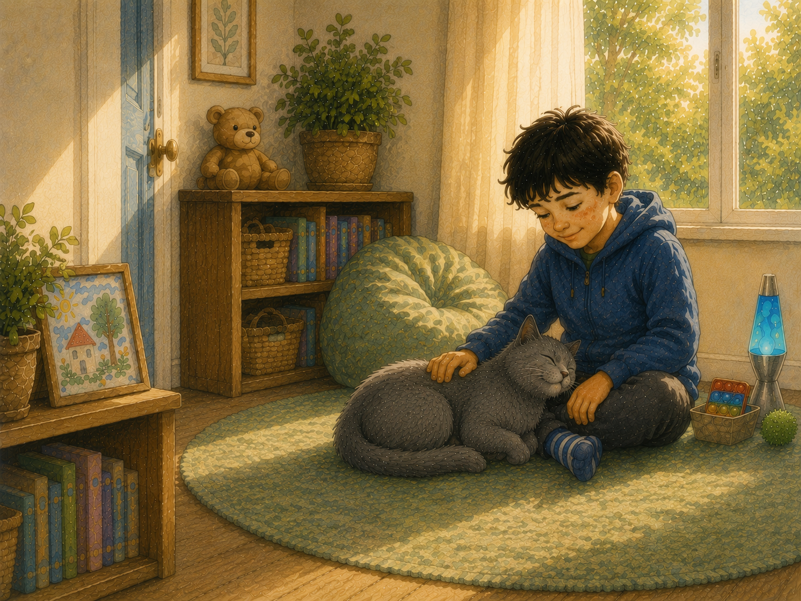
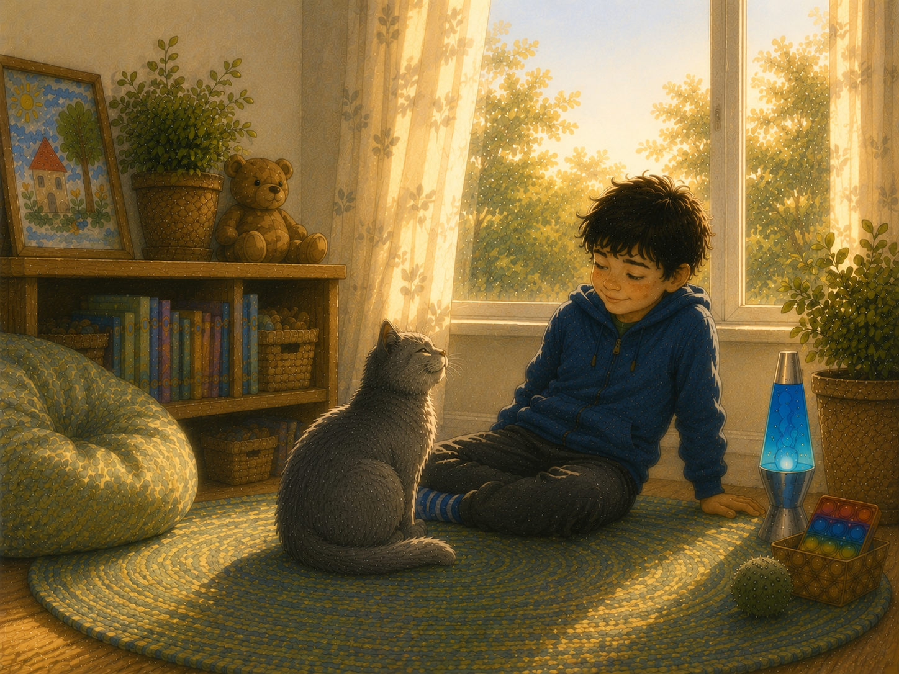
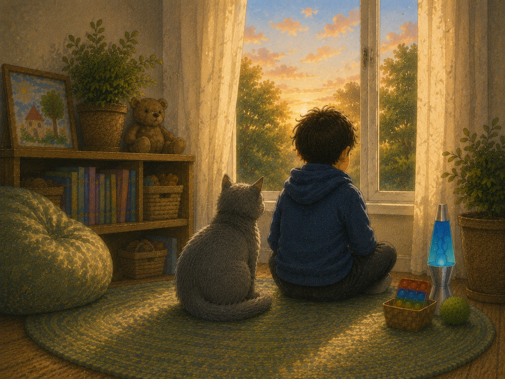

The little grey cat had found its meow.
It was still a quiet cat.
It still liked copying people.
It still thought dogs were rather silly.
But now it knew it belonged.

One sunny afternoon, a family came to visit.
They brought with them a little boy who hardly spoke.
He stayed close to his parents and looked carefully around the room.

When the little boy saw the grey cat, he became very still.
He wasn’t cross.
He wasn’t unkind.
He simply wasn’t ready.
The grey cat understood.

The other grown-ups smiled.
“Oh,” they said, “I don’t think he likes cats.”
But the little grey cat didn’t think that at all.
Sometimes being frightened can look a little like not liking something.

The grey cat remembered how it had once felt different.
It remembered being quiet.
It remembered not knowing where it belonged.
So it didn’t walk over.
It didn’t meow.
It simply stayed nearby.

A little later, the boy went into another room where everything was peaceful.
The grey cat quietly followed.
Not too close.
Not too far away.
Just enough to let the boy know he wasn’t alone.

After a while, the grey cat curled up beside the little boy.
It waited.
The room stayed quiet.
Then, very slowly, the little boy smiled.
He gently rested one hand on the grey cat’s soft fur.
The grey cat purred.

From that day on, the little boy wasn’t afraid of the little grey cat.
And the little grey cat knew something important.
Sometimes the greatest kindness isn’t saying anything at all.
Sometimes friendship begins by quietly waiting, until someone is ready.

The little grey cat learned something new.
Sometimes people don't need someone to hurry them.
Sometimes they simply need someone who understands.
Something to think about
What can help someone feel safe enough to make a new friend?